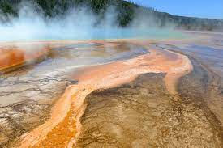
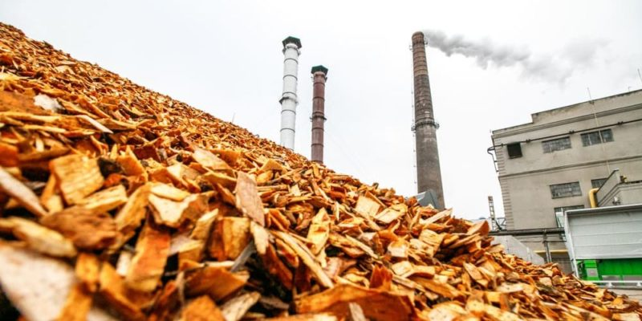

Las energías renovables son aquellas que se obtienen a partir de fuentes naturales que se renuevan de forma continua, como la luz solar, el viento, el agua y la biomasa. A diferencia de las energías fósiles, las energías renovables no producen gases de efecto invernadero, por lo que son una alternativa más sostenible para el medio ambiente.
Principales tipos de energías renovables
Energía solar: es aquella que se obtiene a partir del sol en forma de radiación electromagnética (luz, calor y rayos ultravioleta)

Energía eólica: es una fuente de energía renovable que se obtiene de la energía cinética del viento que mueve las palas de un aerogenerador el cual a su vez pone en funcionamiento una turbina que la convierte en energía

Energía hidráulica: es aquella que aprovecha el movimiento del agua para generar energía. Su obtención se debe al aprovechamiento de la energía cinética y potencial de los saltos de agua o corrientes.

Energía geotérmica: aprovecha el calor del interior de la tierra para que pueda ser utilizada en alimentar de manera sostenible sistemas de climatización o también para generar energía eléctrica renovable

Energía marina: aprovecha el calor del interior de la tierra para que pueda ser utilizada en alimentar de manera sostenible sistemas de climatización o también para generar energía eléctrica renovable

Biomasa: La energía a través de la biomasa es básicamente utilizar la materia orgánica como fuente energética. Esta materia orgánica, es heterogénea. Pueden ser desde deshechos de agricultura (huesos de aceituna, cáscaras de frutos secos, restos de poda de vid…) a restos de madera, como pellets o serrín.

Importancia de las energías renovables
- Son una fuente de energía limpia y sostenible
- Son una fuente de energía segura y fiable
- Son una fuente de energía accesible
Desarrollo de las energías renovables
El desarrollo de las energías renovables está creciendo a un ritmo acelerado. En 2021, la generación de energía renovable superó por primera vez a la generación de energía fósil en el mundo.